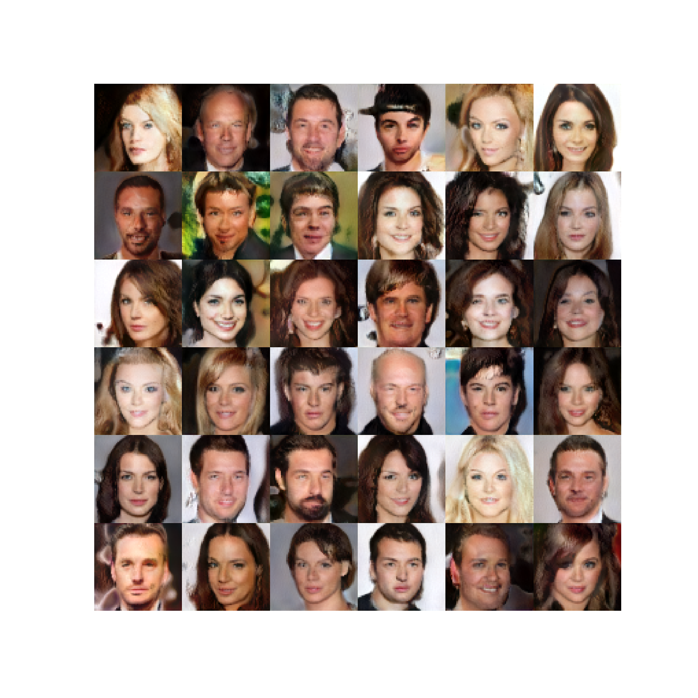
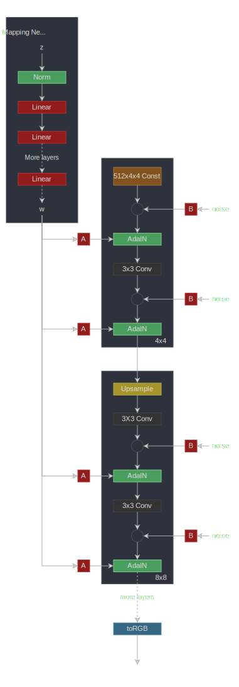
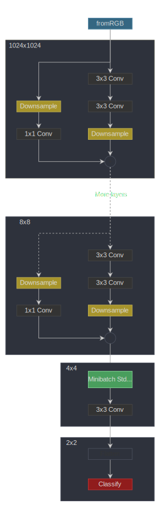

スタイルガン 2
これは、StyleGan 2を紹介する論文「スタイルガンの画質の分析と改善」をPyTorchで実装したものです。StyleGan 2は、論文「敵対的生成ネットワークのためのスタイルベースのジェネレーターアーキテクチャ」のStyleGANを改良したものです。また、StyleGanは論文「GANの漸進的成長による品質、安定性、バリエーションの向上」のプログレッシブGANをベースにしています。3 つの論文はすべて NVIDIA AI の同じ著者によるものです
。私たちの実装は、最小限のStyleGAN 2モデルトレーニングコードです。実装をシンプルに保つため、単一の GPU トレーニングのみがサポートされています。なんとか縮小して、トレーニングループを含めて 500 行未満のコードに抑えることができました
。🏃 トレーニングコードは次のとおりです:experiment.py
.

これらは、約 80K ステップのトレーニング後に生成された画像です。
まず、3つの論文を大まかに紹介します。
ジェネレーティブ・アドバサリアル・ネットワーク
ジェネレーティブ・アドバーサリアル・ネットワークには、ジェネレーターとディスクリミネーターという2つの要素があります。ジェネレーターネットワークはランダムな潜在ベクトル () を受け取り、リアルな画像を生成しようとします。ディスクリミネーターネットワークは、実際の画像と生成された画像を区別しようとします。2 つのネットワークを一緒にトレーニングすると、ジェネレーターは実際の画像と区別がつかない画像を生成し始めます
。プロッシブ GAN
プログレッシブ GAN は、サイズの高解像度画像 () を生成します。これは、画像サイズを徐々に大きくすることによって行われます。まず、ネットワークに学習させて画像を生成し、次に画像を生成するといった具合に、目的の画像解像度まで学習させます。
それぞれの解像度で、ジェネレーターネットワークは潜在空間に画像を生成し、それを畳み込みでRGBに変換します。低い解像度から高い解像度へ（たとえばから ）進むとき、潜在画像を拡大縮小し、新しいブロック（2つの畳み込み層）と新しいレイヤーを追加してRGBにします。スケーリングされた RGB 画像に残余接続を追加することで、トランジションがスムーズに行われます。この残った接続部の重量は徐々に減らされていき、新しいブロックに引き継がれます
。ディスクリミネーターはジェネレータネットワークのミラーイメージです。ディスクリミネーターの漸進的な成長も同様に行われます
。
フィーチャマップの解像度のスケーリングとスケーリングを示します。,,... ジェネレータブロックまたはディスクリミネータブロックでの特徴マップ解像度を示します。ディスクリミネーターとジェネレーターの各ブロックは、リークしやすいReLUアクティベーションを備えた2つの畳み込み層で構成されています
。ミニバッチ標準偏差を使用して変動を増やし、学習率を均等化します。これについては、実装で後述します。また、ピクセル単位の正規化も使用しており、各ピクセルで特徴ベクトルが正規化されます。これをすべての畳み込み層出力 (RGB を除く) に適用します
。スタイルガン
StyleGANは、ディスクリミネーターのアーキテクチャを同じに保ちながら、プログレッシブGANのジェネレーターを改良しました。
マッピングネットワーク
ランダムな潜在ベクトル（）を、8層のニューラルネットワークを使用して別の潜在空間（）にマッピングします。これにより、変動の要因がより直線的な（もつれが解かれた）中間的な潜在空間が得られます。
アダン
次に、レイヤーごとに2つのベクトル（スタイル）に変換され、演算子（正規化とスケーリング）を使用して各レイヤーのスケーリングとシフト（バイアス）に使用されます。
スタイルミキシング
ジェネレータが隣接するスタイルが相互に関連していると見なさないように、ジェネレータはブロックごとに異なるスタイルをランダムに使用します。つまり、 2つの潜在ベクトルとそれに対応するものをサンプリングし、一部のブロックにはベーススタイルを使用し、一部の黒人にはベーススタイルをランダムに使用します
。確率的変動
各ブロックにノイズが入るため、ジェネレータはよりリアルな画像を作成できます。ノイズは、学習した重みによってチャンネルごとにスケーリングされます
。バイリニアアップ/ダウンサンプリング
すべてのアップサンプリング操作とダウンサンプリング操作には、バイリニアスムージングが伴います。

線形レイヤーを示します。ブロードキャストとスケーリング操作を表します（ノイズは単一チャネル）。StyleGanは、プログレッシブGANのようなプログレッシブ栽培も使用しています
。スタイルガン 2
スタイルガン 2 はスタイルガンのジェネレーターとディスクリミネーターの両方を変更します。
重み変調と復調
オペレータを取り外して、重み変調と復調のステップに置き換えます。これは、演算子の正規化によって生成される画像に存在する、いわゆるドロップレットアーティファクトを改善するためのものです。レイヤーごとのスタイルベクトルは、から計算されます。
次に、コンボリューションの重みは次のように変調されます。（ここでは中間の潜在空間ではなく重みを指します。論文と同じ表記法にこだわっています
。）次に、は入力チャンネル、は出力チャンネル、はカーネルインデックスを正規化して復調されます。
経路長の正則化
パス長の正則化により、固定サイズのステップインが促進され、生成されるイメージにゼロ以外の固定マグニチュード変化が生じます。
プログレッシブ成長なし
StyleGAN2 はディスクリミネーターに残留接続 (ダウンサンプリングあり) を使用し、ジェネレーターではアップサンプリングではスキップコネクションを使用します (各レイヤーの RGB 出力が追加されるため、フィーチャマップに残留接続はありません)。実験を行ったところ、トレーニングの開始時には低解像度のレイヤーの寄与度が高く、その後は高解像度のレイヤーが引き継ぐことが示されています
。148import math
149from typing import Tuple, Optional, List
150
151import numpy as np
152import torch
153import torch.nn.functional as F
154import torch.utils.data
155from torch import nnマッピングネットワーク

これは8つの線形レイヤーを備えたMLPです。マッピングネットワークは、潜在ベクトルを中間潜在空間にマッピングします。空間は画像空間から切り離され、変化の要因がより直線的になります
。158class MappingNetwork(nn.Module):featuresはおよび内のフィーチャの数ですn_layersは、マッピングネットワーク内のレイヤーの数です。
173 def __init__(self, features: int, n_layers: int):178 super().__init__()MLP を作成して下さい
181 layers = []
182 for i in range(n_layers):184 layers.append(EqualizedLinear(features, features))リーキーリレー
186 layers.append(nn.LeakyReLU(negative_slope=0.2, inplace=True))
187
188 self.net = nn.Sequential(*layers)190 def forward(self, z: torch.Tensor):ノーマライズ
192 z = F.normalize(z, dim=1)にマッピング
194 return self.net(z)スタイル GAN2 ジェネレータ

線形レイヤーを示します。ブロードキャストとスケーリング操作を表します（ノイズは単一チャネル）。toRGB
また、図には示されていないスタイルモジュレーションも付いており、シンプルさを保っています
ジェネレータは学習した定数から始まります。次に、一連のブロックがあります。特徴マップの解像度は各ブロックで 2 倍になります。各ブロックは RGB 画像を出力し、それらを拡大して合計して最終的な RGB 画像になります
。197class Generator(nn.Module):log_resolutionは画像解像度のd_latentの次元ですn_features最大解像度でのコンボリューションレイヤーのフィーチャ数 (最終ブロック)max_features任意のジェネレータブロック内のフィーチャの最大数
214 def __init__(self, log_resolution: int, d_latent: int, n_features: int = 32, max_features: int = 512):221 super().__init__()226 features = [min(max_features, n_features * (2 ** i)) for i in range(log_resolution - 2, -1, -1)]ジェネレータブロック数
228 self.n_blocks = len(features)トレーニング可能な定数
231 self.initial_constant = nn.Parameter(torch.randn((1, features[0], 4, 4)))解像度とレイヤーをRGBにする最初のスタイルブロック
234 self.style_block = StyleBlock(d_latent, features[0], features[0])
235 self.to_rgb = ToRGB(d_latent, features[0])ジェネレータブロック
238 blocks = [GeneratorBlock(d_latent, features[i - 1], features[i]) for i in range(1, self.n_blocks)]
239 self.blocks = nn.ModuleList(blocks)アップサンプリングレイヤー。フィーチャースペースは各ブロックでアップサンプリングされます
。243 self.up_sample = UpSample()wです。スタイルをミックスするために（レイヤーごとに異なるスタイルを使用）、ジェネレーターブロックごとに個別のスタイルが用意されています。形があります[n_blocks, batch_size, d_latent]。input_noiseは各ブロックのノイズです。各ブロック (最初のブロックを除く) には各畳み込み層の後に 2 つのノイズ入力があるため、これはノイズセンサーのペアのリストです (図を参照
245 def forward(self, w: torch.Tensor, input_noise: List[Tuple[Optional[torch.Tensor], Optional[torch.Tensor]]]):バッチサイズを取得
255 batch_size = w.shape[1]学習した定数をバッチサイズに合わせて拡張する
258 x = self.initial_constant.expand(batch_size, -1, -1, -1)最初のスタイルブロック
261 x = self.style_block(x, w[0], input_noise[0][1])最初の RGB イメージを取得
263 rgb = self.to_rgb(x, w[0])残りのブロックを評価
266 for i in range(1, self.n_blocks):フィーチャーマップをアップサンプリング
268 x = self.up_sample(x)270 x, rgb_new = self.blocks[i - 1](x, w[i], input_noise[i])RGB イメージをアップサンプリングし、ブロックから RGB に追加します
272 rgb = self.up_sample(rgb) + rgb_new最終的な RGB イメージを返す
275 return rgbジェネレータブロック

線形レイヤーを示します。ブロードキャストとスケーリング操作を表します（ノイズは単一チャネル）。toRGB
また、図には示されていないスタイルモジュレーションも付いており、シンプルさを保っています
ジェネレーターブロックは、2 つのスタイルブロック (スタイル変調によるコンボリューション) と 1 つの RGB 出力で構成されています。
278class GeneratorBlock(nn.Module):d_latentの次元ですin_featuresは入力フィーチャマップ内のフィーチャの数ですout_featuresは出力フィーチャマップ内のフィーチャの数です
294 def __init__(self, d_latent: int, in_features: int, out_features: int):300 super().__init__()最初のスタイルブロックは、フィーチャマップのサイズを次のように変更します out_features
303 self.style_block1 = StyleBlock(d_latent, in_features, out_features)305 self.style_block2 = StyleBlock(d_latent, out_features, out_features)TorGB レイヤー
308 self.to_rgb = ToRGB(d_latent, out_features)xはシェイプの入力フィーチャマップです[batch_size, in_features, height, width]w形付きです[batch_size, d_latent]noise形状の2つのノイズテンソルのタプルです[batch_size, 1, height, width]
310 def forward(self, x: torch.Tensor, w: torch.Tensor, noise: Tuple[Optional[torch.Tensor], Optional[torch.Tensor]]):最初のノイズテンソルを持つ最初のスタイルブロック。出力は整形しています [batch_size, out_features, height, width]
318 x = self.style_block1(x, w, noise[0])2 番目のノイズテンソルを備えた 2 番目のスタイルブロック。出力は整形しています [batch_size, out_features, height, width]
321 x = self.style_block2(x, w, noise[1])RGB イメージを取得
324 rgb = self.to_rgb(x, w)フィーチャマップと RGB イメージを返す
327 return x, rgbスタイルブロック

線形レイヤーを示します。ブロードキャストとスケーリング操作を表します（ノイズはシングルチャネル
）。スタイルブロックにはウェイトモジュレーションコンボリューションレイヤーがあります。
330class StyleBlock(nn.Module):d_latentの次元ですin_featuresは入力フィーチャマップ内のフィーチャの数ですout_featuresは出力フィーチャマップ内のフィーチャの数です
344 def __init__(self, d_latent: int, in_features: int, out_features: int):350 super().__init__()学習率が均等化された線形層で (図で示されている) からスタイルベクトルを取得
353 self.to_style = EqualizedLinear(d_latent, in_features, bias=1.0)重み変調コンボリューション層
355 self.conv = Conv2dWeightModulate(in_features, out_features, kernel_size=3)ノイズスケール
357 self.scale_noise = nn.Parameter(torch.zeros(1))バイアス
359 self.bias = nn.Parameter(torch.zeros(out_features))アクティベーション機能
362 self.activation = nn.LeakyReLU(0.2, True)xはシェイプの入力フィーチャマップです[batch_size, in_features, height, width]w形付きです[batch_size, d_latent]noise形状のテンソルです[batch_size, 1, height, width]
364 def forward(self, x: torch.Tensor, w: torch.Tensor, noise: Optional[torch.Tensor]):スタイルベクトルを取得
371 s = self.to_style(w)重み変調コンボリューション
373 x = self.conv(x, s)スケーリングとノイズの追加
375 if noise is not None:
376 x = x + self.scale_noise[None, :, None, None] * noiseバイアスを加えて活性化関数を評価する
378 return self.activation(x + self.bias[None, :, None, None])
381class ToRGB(nn.Module):d_latentの次元ですfeaturesはフィーチャマップ内のフィーチャの数です
394 def __init__(self, d_latent: int, features: int):399 super().__init__()学習率が均等化された線形層で (図で示されている) からスタイルベクトルを取得
402 self.to_style = EqualizedLinear(d_latent, features, bias=1.0)復調なしの重み変調畳み込み層
405 self.conv = Conv2dWeightModulate(features, 3, kernel_size=1, demodulate=False)バイアス
407 self.bias = nn.Parameter(torch.zeros(3))アクティベーション機能
409 self.activation = nn.LeakyReLU(0.2, True)xはシェイプの入力フィーチャマップです[batch_size, in_features, height, width]w形付きです[batch_size, d_latent]
411 def forward(self, x: torch.Tensor, w: torch.Tensor):スタイルベクトルを取得
417 style = self.to_style(w)重み変調コンボリューション
419 x = self.conv(x, style)バイアスを加えて活性化関数を評価する
421 return self.activation(x + self.bias[None, :, None, None])424class Conv2dWeightModulate(nn.Module):in_featuresは入力フィーチャマップ内のフィーチャの数ですout_featuresは出力フィーチャマップ内のフィーチャの数ですkernel_sizeコンボリューションカーネルのサイズですdemodulate重みをその標準偏差で正規化するかどうかがフラグeps正規化用です
431 def __init__(self, in_features: int, out_features: int, kernel_size: int,
432 demodulate: float = True, eps: float = 1e-8):440 super().__init__()出力機能の数
442 self.out_features = out_featuresウェイトを正規化するかどうか
444 self.demodulate = demodulateパディングサイズ
446 self.padding = (kernel_size - 1) // 2449 self.weight = EqualizedWeight([out_features, in_features, kernel_size, kernel_size])451 self.eps = epsxはシェイプの入力フィーチャマップです[batch_size, in_features, height, width]sスタイルベースの形状のスケーリングテンソルです[batch_size, in_features]
453 def forward(self, x: torch.Tensor, s: torch.Tensor):バッチサイズ、高さ、幅を取得
460 b, _, h, w = x.shape体重計の形を変えて
463 s = s[:, None, :, None, None]465 weights = self.weight()[None, :, :, :, :]ここで、は入力チャンネル、は出力チャンネル、はカーネルインデックス。
結果には形があります [batch_size, out_features, in_features, kernel_size, kernel_size]
470 weights = weights * s復調する
473 if self.demodulate:475 sigma_inv = torch.rsqrt((weights ** 2).sum(dim=(2, 3, 4), keepdim=True) + self.eps)477 weights = weights * sigma_inv形を変える x
480 x = x.reshape(1, -1, h, w)ウェイトの形を変える
483 _, _, *ws = weights.shape
484 weights = weights.reshape(b * self.out_features, *ws)グループ化されたコンボリューションを使用すると、サンプルごとのカーネルでコンボリューションを効率的に計算できます。つまり、バッチ内のサンプルごとに異なるカーネル（重み）があります
488 x = F.conv2d(x, weights, padding=self.padding, groups=b)x
[batch_size, out_features, height, width]
形状を変更して戻る
491 return x.reshape(-1, self.out_features, h, w)スタイルガン 2 ディスクリミネーター

ディスクリミネーターは、まず画像を同じ解像度の特徴マップに変換してから、残留接続のある一連のブロックを処理します。解像度はブロックごとにダウンサンプリングされ、フィーチャの数は 2 倍になります。
494class Discriminator(nn.Module):log_resolutionは画像解像度のn_features最大解像度でのコンボリューションレイヤーのフィーチャ数 (1 番目のブロック)max_features任意のジェネレータブロック内のフィーチャの最大数
508 def __init__(self, log_resolution: int, n_features: int = 64, max_features: int = 512):514 super().__init__()RGB n_features
画像を多数のフィーチャを含むフィーチャマップに変換するレイヤー。
517 self.from_rgb = nn.Sequential(
518 EqualizedConv2d(3, n_features, 1),
519 nn.LeakyReLU(0.2, True),
520 )525 features = [min(max_features, n_features * (2 ** i)) for i in range(log_resolution - 1)]527 n_blocks = len(features) - 1ディスクリミネーターブロック
529 blocks = [DiscriminatorBlock(features[i], features[i + 1]) for i in range(n_blocks)]
530 self.blocks = nn.Sequential(*blocks)標準偏差マップを追加した後のフィーチャ数
535 final_features = features[-1] + 1最終畳み込み層
537 self.conv = EqualizedConv2d(final_features, final_features, 3)分類を行うための最後の線形レイヤー
539 self.final = EqualizedLinear(2 * 2 * final_features, 1)x形状の入力画像です[batch_size, 3, height, width]
541 def forward(self, x: torch.Tensor):画像を正規化してみてください（これは完全にオプションですが、初期のトレーニングを少しスピードアップできます）
547 x = x - 0.5RGB から変換
549 x = self.from_rgb(x)551 x = self.blocks(x)554 x = self.std_dev(x)畳み込み
556 x = self.conv(x)平坦化
558 x = x.reshape(x.shape[0], -1)分類スコアを返す
560 return self.final(x)
563class DiscriminatorBlock(nn.Module):in_featuresは入力フィーチャマップ内のフィーチャの数ですout_featuresは出力フィーチャマップ内のフィーチャの数です
574 def __init__(self, in_features, out_features):579 super().__init__()残差接続用のダウンサンプリング層と畳み込み層
581 self.residual = nn.Sequential(DownSample(),
582 EqualizedConv2d(in_features, out_features, kernel_size=1))2 つの畳み込み
585 self.block = nn.Sequential(
586 EqualizedConv2d(in_features, in_features, kernel_size=3, padding=1),
587 nn.LeakyReLU(0.2, True),
588 EqualizedConv2d(in_features, out_features, kernel_size=3, padding=1),
589 nn.LeakyReLU(0.2, True),
590 )ダウンサンプリングレイヤー
593 self.down_sample = DownSample()残差を加えた後のスケーリング係数
596 self.scale = 1 / math.sqrt(2)598 def forward(self, x):残余接続を取得
600 residual = self.residual(x)コンボリューション
603 x = self.block(x)ダウンサンプル
605 x = self.down_sample(x)残差を追加してスケーリングします
608 return (x + residual) * self.scaleミニバッチ標準偏差
ミニバッチ標準偏差は、特徴マップ内の各フィーチャについて、ミニバッチ (またはミニバッチ内のサブグループ) 全体の標準偏差を計算します。次に、すべての標準偏差の平均を取得し、それを 1 つの特徴として特徴マップに追加します。
611class MiniBatchStdDev(nn.Module):group_size標準偏差を計算するサンプルの数です。
623 def __init__(self, group_size: int = 4):627 super().__init__()
628 self.group_size = group_sizex機能マップです
630 def forward(self, x: torch.Tensor):バッチサイズがグループサイズで割り切れるかどうかを確認してください
635 assert x.shape[0] % self.group_size == 0各特徴の標準偏差を計算したいのでgroup_size
、サンプルをグループに分け、特徴マップを 1 つの次元に平坦化します。
638 grouped = x.view(self.group_size, -1)645 std = torch.sqrt(grouped.var(dim=0) + 1e-8)平均標準偏差を取得
647 std = std.mean().view(1, 1, 1, 1)標準偏差を拡張して特徴マップに追加
649 b, _, h, w = x.shape
650 std = std.expand(b, -1, h, w)標準偏差を機能マップに追加 (連結) します
652 return torch.cat([x, std], dim=1)ダウンサンプル
ダウンサンプル操作では、バイリニア補間を使用して各フィーチャチャネルとスケールが滑らかになります。これは、「畳み込みネットワークを再びシフト不変にする」という論文に基づいています
。655class DownSample(nn.Module):667 def __init__(self):
668 super().__init__()スムージングレイヤー
670 self.smooth = Smooth()672 def forward(self, x: torch.Tensor):スムージングまたはぼかし
674 x = self.smooth(x)スケールダウン
676 return F.interpolate(x, (x.shape[2] // 2, x.shape[3] // 2), mode='bilinear', align_corners=False)679class UpSample(nn.Module):690 def __init__(self):
691 super().__init__()アップサンプリングレイヤー
693 self.up_sample = nn.Upsample(scale_factor=2, mode='bilinear', align_corners=False)スムージングレイヤー
695 self.smooth = Smooth()697 def forward(self, x: torch.Tensor):アップサンプリングとスムージング
699 return self.smooth(self.up_sample(x))702class Smooth(nn.Module):711 def __init__(self):
712 super().__init__()ブラーリングカーネル
714 kernel = [[1, 2, 1],
715 [2, 4, 2],
716 [1, 2, 1]]カーネルを PyTorch テンソルに変換します
718 kernel = torch.tensor([[kernel]], dtype=torch.float)カーネルを正規化
720 kernel /= kernel.sum()カーネルを固定パラメータとして保存 (グラデーションの更新なし)
722 self.kernel = nn.Parameter(kernel, requires_grad=False)パディングレイヤー
724 self.pad = nn.ReplicationPad2d(1)726 def forward(self, x: torch.Tensor):入力フィーチャマップの形状を取得
728 b, c, h, w = x.shape形を変えてなめらかに
730 x = x.view(-1, 1, h, w)パディングを追加
733 x = self.pad(x)カーネルによるスムージング (ぼかし)
736 x = F.conv2d(x, self.kernel)形を変えて戻る
739 return x.view(b, c, h, w)742class EqualizedLinear(nn.Module):in_featuresは入力フィーチャマップ内のフィーチャの数ですout_featuresは出力フィーチャマップ内のフィーチャの数ですbiasはバイアス初期化定数です
751 def __init__(self, in_features: int, out_features: int, bias: float = 0.):758 super().__init__()760 self.weight = EqualizedWeight([out_features, in_features])バイアス
762 self.bias = nn.Parameter(torch.ones(out_features) * bias)764 def forward(self, x: torch.Tensor):線形変換
766 return F.linear(x, self.weight(), bias=self.bias)769class EqualizedConv2d(nn.Module):in_featuresは入力フィーチャマップ内のフィーチャの数ですout_featuresは出力フィーチャマップ内のフィーチャの数ですkernel_sizeコンボリューションカーネルのサイズですpadding各サイズ寸法の両側に追加するパディングです
778 def __init__(self, in_features: int, out_features: int,
779 kernel_size: int, padding: int = 0):786 super().__init__()パディングサイズ
788 self.padding = padding790 self.weight = EqualizedWeight([out_features, in_features, kernel_size, kernel_size])バイアス
792 self.bias = nn.Parameter(torch.ones(out_features))794 def forward(self, x: torch.Tensor):コンボリューション
796 return F.conv2d(x, self.weight(), bias=self.bias, padding=self.padding)学習率均等化重みパラメーター
これは、プログレッシブGANの論文で紹介された学習率の均等化に基づいています。ウェイトをで初期化する代わりに、ウェイトをに初期化し、使用時にそのウェイトを乗算します。
保存されているパラメーターの勾配は乗算されますが、Adam などのオプティマイザーは勾配の 2 乗平均で正規化するため、影響はありません。
オプティマイザーの更新は学習率に比例します。ただし、有効重みはそれに比例して更新されます。学習率が均等化されていないと、有効重みは正に比例して更新されます
。そこで、これらの重みパラメータによって学習率を効果的にスケーリングしています。
799class EqualizedWeight(nn.Module):shapeは重みパラメータの形状です
820 def __init__(self, shape: List[int]):824 super().__init__()HE 初期化定数
827 self.c = 1 / math.sqrt(np.prod(shape[1:]))ウェイトを次のように初期化します。
829 self.weight = nn.Parameter(torch.randn(shape))重量乗算係数
832 def forward(self):重み値を掛けて返します。
834 return self.weight * self.cグラデーションペナルティ
これは、「GANのどのトレーニング方法が実際に収束するのか」 という論文の正則化のペナルティです。
。
つまり、実際の画像 () について、画像に対するディスクリミネーターの勾配のL2ノルムを小さくしようとしています。
837class GradientPenalty(nn.Module):853 def forward(self, x: torch.Tensor, d: torch.Tensor):バッチサイズを取得
860 batch_size = x.shape[0]を基準とした勾配を計算します。grad_outputs
の勾配を求めているのでに設定されています。また、この損失による重みに対する勾配を計算する必要があるため、グラフを作成して保持する必要があります
866 gradients, *_ = torch.autograd.grad(outputs=d,
867 inputs=x,
868 grad_outputs=d.new_ones(d.shape),
869 create_graph=True)グラデーションの形を変えてノルムを計算しよう
872 gradients = gradients.reshape(batch_size, -1)ノルムの計算
874 norm = gradients.norm(2, dim=-1)損失を返す
876 return torch.mean(norm ** 2)経路長ペナルティ
この正則化により、固定サイズのステップインが促進され、画像の大きさが固定された変化が生じます。
ここで、はマッピングネットワークからサンプリングされたヤコビアンで、ノイズの入った画像です。
は、トレーニングの進行に伴う指数移動平均です。
を使用してヤコビアンを明示的に計算せずに計算されます
879class PathLengthPenalty(nn.Module):beta指数移動平均の計算に使用される定数です
903 def __init__(self, beta: float):907 super().__init__()910 self.beta = beta計算されたステップ数
912 self.steps = nn.Parameter(torch.tensor(0.), requires_grad=False)トレーニングの -番目のステップでの値の指数和を求める
916 self.exp_sum_a = nn.Parameter(torch.tensor(0.), requires_grad=False)w形状のバッチです[batch_size, d_latent]x生成された形状の画像です[batch_size, 3, height, width]
918 def forward(self, w: torch.Tensor, x: torch.Tensor):デバイスを入手
925 device = x.deviceピクセル数を取得
927 image_size = x.shape[2] * x.shape[3]計算
929 y = torch.randn(x.shape, device=device)画像サイズの平方根で計算して正規化します。このスケーリングについては論文では触れられていませんが、実装には存在していました。
933 output = (x * y).sum() / math.sqrt(image_size)勾配を計算して取得
936 gradients, *_ = torch.autograd.grad(outputs=output,
937 inputs=w,
938 grad_outputs=torch.ones(output.shape, device=device),
939 create_graph=True)の L2 ノルムの計算
942 norm = (gradients ** 2).sum(dim=2).mean(dim=1).sqrt()最初の一歩を踏み出したら正則化
945 if self.steps > 0:計算
948 a = self.exp_sum_a / (1 - self.beta ** self.steps)ペナルティの計算
952 loss = torch.mean((norm - a) ** 2)
953 else:計算できない場合はダミーロスを返す
955 loss = norm.new_tensor(0)の平均を計算
958 mean = norm.mean().detach()指数和を更新
960 self.exp_sum_a.mul_(self.beta).add_(mean, alpha=1 - self.beta)インクリメント
962 self.steps.add_(1.)ペナルティを返せ
965 return loss